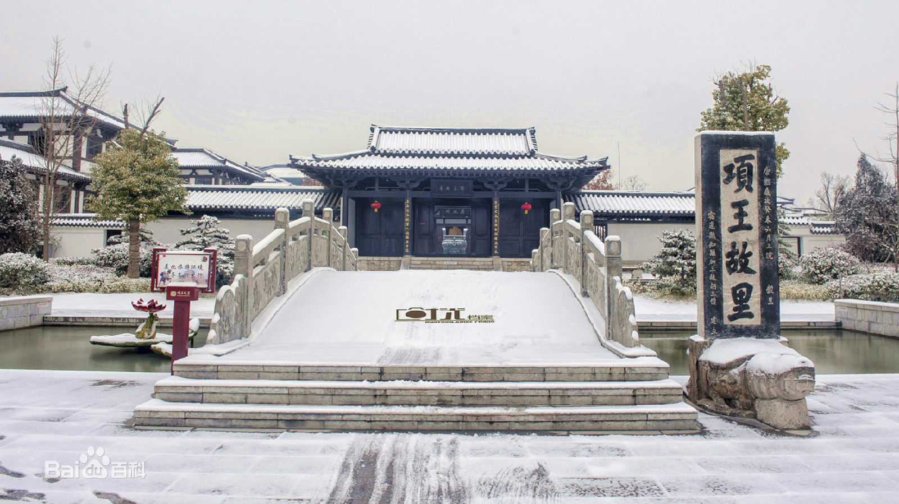

项王故里
项王故里坐落于江苏省宿迁市宿城区梧桐巷、古黄河与京杭大运河之间，徐淮路东侧， 又称为“梧桐巷”，是楚国贵族、秦末农民起义军的领袖，“拔山盖世”的英雄、西楚霸王项羽的出生地。
项王故里是中国首家以项羽和项家文化为主题的项家宗祠等，为国家AAAA级旅游景区、江苏省重点文物保护单位。 项王故里以楚地汉风为主，兼具宫廷建筑和园林建筑建筑风格。 康熙四十年立碑以为纪念。家乡人民为了纪念这位既勇猛又豪爽的英雄，在其出生地-下相梧桐巷立碑、建坊。
截至2014年11月20日项王故里总建筑面积35万平方米，包括项王故里核心区、梧桐巷传统街区、西楚大街商业休闲区、 滨水文化休闲区、商业文化休闲区和滨河商业休闲区，其中核心景区占地面积260亩，建筑面积7.6万平方米。